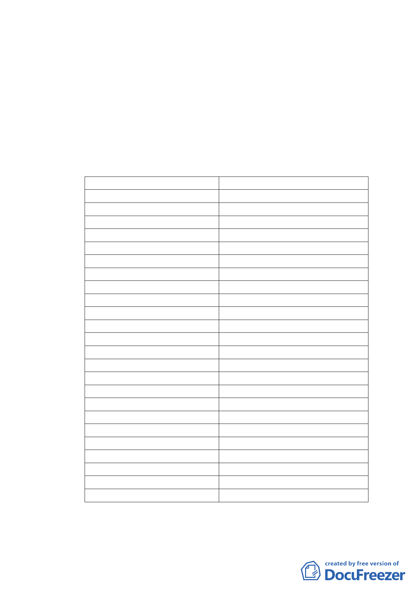

獎資歷之要求，經市府民政局提報及大會討論後，條件訂
為「獲頒本府、內政部或行政院公益慈善及社會教化事業
績優宗教團體獎累計達 10 次以上者」。而依民政局表示，
87 年度至 98 年度本市獲獎宗教團體總數計 65 家，其中總
獲獎次數達 10 次以上者計 21 家（詳如附表一），慈惠堂十
二年累計獲獎 16 次，符合上述條件。
附表一 87 年度至 98 年度獲頒本府、內政部及行政院公益慈善及
社會教化事業績優宗教團體獎獲獎團體家數統計一覽表
87 年至 98 年獲獎總次數
24 次
23 次以上
22 次以上
21 次以上
20 次以上
19 次以上
18 次以上
17 次以上
16 次以上
15 次以上
14 次以上
13 次以上
12 次以上
11 次以上
10 次以上
9 次以上
8 次以上
7 次以上
6 次以上
5 次以上
4 次以上
3 次以上
2 次以上
1 次以上
累計團體家數
1
1
1
2
3
3
3
8
11
13
14
15
19
20
21
23
27
28
38
41
44
48
54
65
-2-